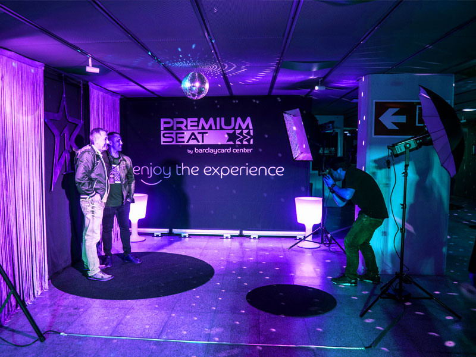
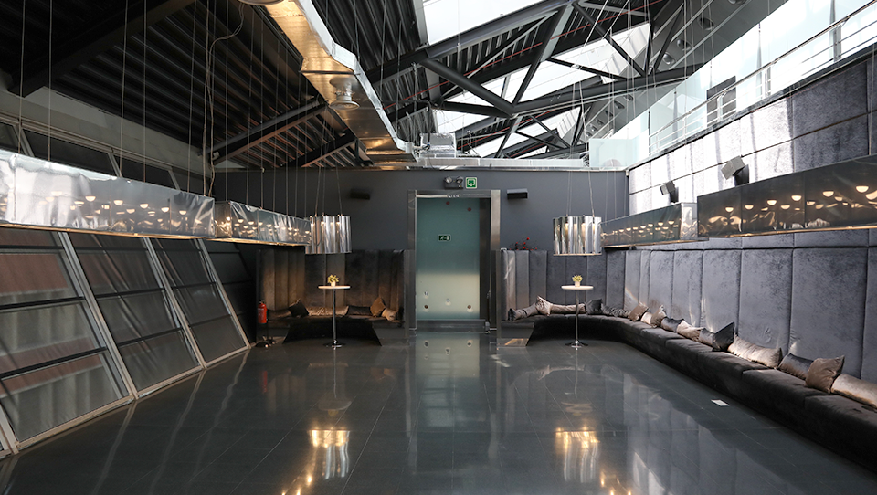
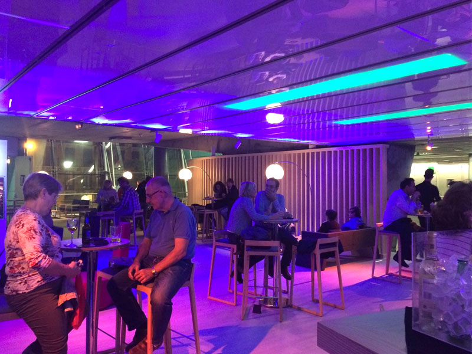
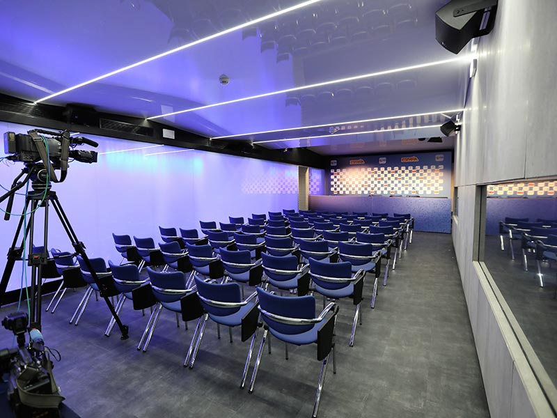
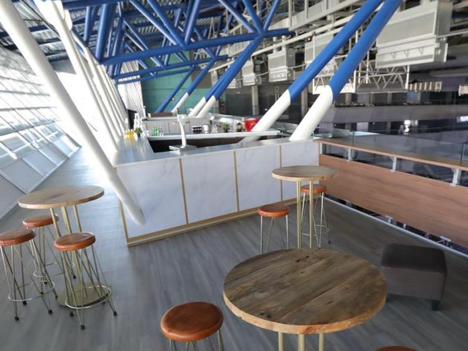

Real Madrid CB
Real Madrid CBEspacios y zonas VIP
Planta 0 / Acceso Jorge Juan
Premium Seat
Prepárate a vivir la experiencia más exclusiva del PREMIUM SEAT, vive el concierto desde la apertura de puertas en un espectacular espacio donde podrás disfrutar de grandes privilegios (*), acceso exclusivo VIP, coctel, recuerdo fotográfico, ambientación músical, y disfruta del concierto en los mejores lugares reservados especialmente para ti.
Acceso C/.Jorge Juan
Truss Madrid
Truss Madrid es un establecimiento exclusivo de la ciudad de Madrid, situado junto al WiZink Center. Sus instalaciones de diseño están inspiradas en el estilo neoyorquino, creando un ambiente chic y lleno de glamour.
Planta 1 / Acceso Goya
EspaZio WiZink
Los WiZinkers y sus invitados disfrutan del espacio más confortable del recinto para disfrutar de una carta de bebidas y raciones única antes y durante los eventos. Y si pagan con su Tarjeta WiZink Oro disfrutan de un 10% de descuento. Para que su experiencia en el WiZink Center sea inolvidable.
Planta -1 / Acceso C. Fuente del Berro
Sala de Prensa
Con entrada independiente desde la calle Fuente del Berro, celebra tu presentación o evento en el mismo lugar en el que el Real Madrid celebra todas sus ruedas de prensa. 200m2 equipados con todo lo necesario para ponencias, y dotada de sistema de leds y panelable para crear dos ambientes.
Planta 6 / Acceso Av. Felipe II
Zona VIP / Palcos VIP
En el WiZink Center hay muchos rincones especiales, pero ninguno tan exclusivo como El Cielo, un espacio de 351 m2 en la zona más alta del recinto desde el que verlo todo desde arriba mientras disfrutas de un privilegio único. Si buscas sorprender a tus invitados, sin duda, El Cielo es el lugar...